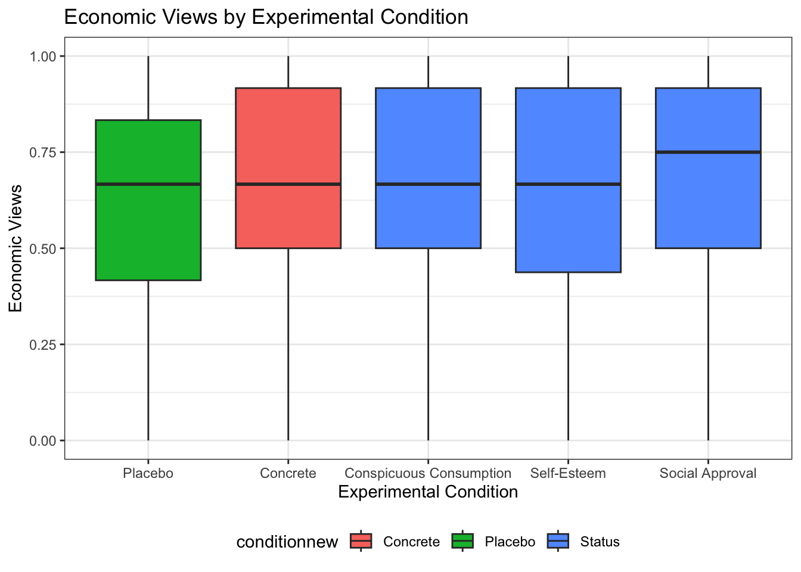

load("status.RData")4 Visualization
In this section, we discuss a set of tools for data visualization in R.
Goals of data visualization
- Communicate information
- Transparently (show me the data!)
- Quickly
- Simply
- Accurately
- And with a little work: beautifully
There are many resources for ideas and best practices for data visualization. See here and here.
We will cover many types of visuals, each typically designed for a different purpose.
What to communicate?
- Data summary
- Central tendency (e.g., mean, median)
- Spread (e.g., standard deviation, IQR)
- Comparison
- e.g., Callback rates for black vs. white sounding names
- Trend
- e.g., Economic confidence over time
- Relationship
- e.g., Correlation
4.1 Application: Social Status and Economic Views
We are going to explore different types of visualizations through different social science examples. The first application we visit is a survey experiment.
Thal, A. (2020). The desire for social status and economic conservatism among affluent Americans. American Political Science Review, 114(2), 426-442.
In the experiment, affluent Americans are randomly assigned to encounter Facebook posts in which others broadcast their economic success. These posts are designed in a way that encourages affluent respondents to view economic success as a means of achieving social status.
Causal claims
- “I expect that exposure to these posts will cause affluent Americans to become more supportive of conservative economic policies.”
- “I also expect that exposure to these posts will cause especially large increases in economic conservatism among affluent men.”
The experiment includes a sample of 2010 affluent Americans– people who report household incomes in the top 10 percent of the U.S. income distribution.
Experiment Ingredients:
- Causal Question: Does desire for social status influence economic views of affluent Americans?
- Recruitment: Ask affluent Americans to take a survey online
- Randomization: Randomly assign respondents to view different fictional Facebook posts designed to signal different motivations
- Outcome: an index based on respondents’ support for decreasing “taxes on households making $150,000 or more a year,” support for decreasing the “taxes on money people make from selling investments, also referred to as capital gains,” and support for decreasing “government regulation of business and industry.”
- Comparison: Average economic views between experimental conditions.
Snapshot of status conditions

Snapshot of Concrete and Placebo comparison conditions

Can you put this into the potential outcomes framework?
4.2 Boxplots
For a video explainer of the code for boxplots and barplots, see below. The video only discusses the code. Use the notes and lecture discussion for additional context. (Via youtube, you can speed up the playback to 1.5 or 2x speed.)
Let’s load the data! Here, note that the data file is in a .RData format instead of .csv. This means that instead of using read.csv, we should use a function to load the data that is suitable for the .RData format. This will be load. That function works the following way:
After running the above code, an object will show up in your R environment.
head(status) condition male econcon
2 Concrete 1 0.7500000
3 Self-Esteem 1 1.0000000
4 Placebo 1 0.6666667
5 Self-Esteem 0 0.2500000
6 Self-Esteem 0 1.0000000
7 Social Approval 0 0.8333333The data include the following variables
condition: Placebo, Concrete, Self-Esteem, Social Approval, Conspicuous Consumptiongender: 1= male; 0= otherwiseeconcon: Economic views. Numeric variable from 0 to 1, with higher values reflecting more conservative views
4.2.1 Data Summary: Boxplot
Characterize the distributions of continuous numeric variables at once
- Features: box, whiskers, outliers
- We will supply the function with a column in our data, and the boxplot displays the distribution of that variable.

Figure from Will Lowe
Here is an example of the boxplot using our econcon variable.
- We have added a title and y-axis label to the plot through the
mainandylabarguments. Play around with changing the words in those arguments.
boxplot(status$econcon,
main="Economic Views in the Survey Sample",
ylab="Economic Views")
After you execute the plot code, a preview of the plot should appear in the bottom-right window of RStudio.
Boxplots are also useful for data summary across multiple distribution: boxplot(y ~ x, data = d)
boxplot(econcon ~ condition, data=status,
main="Economic Views by Experimental Condition",
ylab="Economic Views",
names = c("Placebo", "Concrete", "Conspicuous",
"Self-Esteem", "Social"),
xlab = "Experimental Condition",
col = c("red3", rep("dodgerblue", 4)))
The additional arguments are just aesthetics. Play around with different settings.
- For example, can you change the code to make the first two boxes red? Colors are supplied as a vector using the
col =argument.- To explore colors in R, run this function
colors()in your R console.
- To explore colors in R, run this function
How should we interpret these results? Does status or social approval motivation, specifically, influence economic views? What about other potential motivations?
4.3 Barplots
Comparing frequencies (raw N), proportions, and/or means across categories

We will use the barplot() function.
- In contrast to the boxplot, the barplot function takes a vector of values that will serve as the top of the bars in the plot– it does not summarize a variable from within the function
- E.g., we could supply it a set of means to plot, not a raw variable
- Many of the other arguments are aesthetics similar to those when working with boxplot.
- This means that barplots are pretty easy to create in R. We can supply it a short vector of any values (e.g.,
valuesbar <- c(20, 30, 40, 10)), and we could also supply it a vector of any names to label those values.
## Example
valuesbar <- c(20, 30, 40, 10)
namesbar <- c("Livingston Dining \n Commons",
"Neilson \n Dining Hall",
"Busch \n Dining Hall",
"Brower \n Commons")
barplot(valuesbar,
names=namesbar,
cex.names = .6,
main="Hypothetical Evaluation of RU Dining",
ylab="Percent Prefer Dining Option",
cex.lab = .7,
col="red3")- For real applications, this means we could supply a barplot with the output of a `tapply()` function, a `table()` summarizing a single variable, or a set of `mean()` values we have combined into a vector using `c()`.For example, in experiments, we may use barplots to compare the mean from the treatment group(s) \(\bar{Y}(1)\) to the control \(\bar{Y}(0)\) on some outcome. Let’s do it!
- First, we need the means. Let’s find the conditional means of economic views.
condmeans <- tapply(status$econcon, status$condition, mean)
condmeans # save as object to supply to the barplot function Placebo Concrete Conspicuous Consumption
0.6340948 0.6647485 0.6724065
Self-Esteem Social Approval
0.6564103 0.6904444 The first input is the vector of means/proportions/frequency you want to plot.
barplot(condmeans,
ylim = c(0,1), # y-axis dimensions
names = c("Placebo", "Concrete", "Conspicuous",
"Self-Esteem", "Social"),
col = "black", # color of bars
main = "Mean Economic Views by Condition", # plot title
cex.main = .8, # size of plot title
cex.names = .8, # size of name labels
ylab = "Mean Views", # yaxis label
cex.lab = .8,# size of yaxis label
las = 1) # controls angle of axis labels
The remaining arguments alter the look of the plot to make it more informative.
- How could we improve this plot to make the interpretation easier?
4.3.1 Saving Plots
You can save an image of your plot as a png() to your working directory. Place png() just before your plot with a name in quotations, and then specify the dimensions. Place dev.off() at the bottom.
png("mybarplot.png", width = 7, height = 4, res=300, units="in")
barplot(condmeans,
ylim = c(0,1), # y-axis dimensions
names = c("Placebo", "Concrete", "Conspicuous",
"Self-Esteem", "Social"),
col = "black", # color of bars
main = "Mean Economic Views by Condition", # plot title
cex.main = .8, # size of plot title
cex.names = .8, # size of name labels
ylab = "Mean Views", # yaxis label
cex.lab = .8,# size of yaxis label
las = 1) # controls angle of axis labels
dev.off()Alternatively, you can save it as an image, by going to the plot window in your RStudio environment, and clicking on Export -> Save as Image. Here, you can save it in any file format you would like, as well as change the dimensions.

4.3.2 Creating New Variables
The author theorizes that social approval, self-esteem, and conspicuous consumption are all elements of “status motivation.” We could analyze the results by collapsing them into a single category called “status motivation” and compare it to the other experimental groups.
- Create a new variable
conditionnew - Code the variable into new categories based on the values in the original
conditionvariable - Check the class of the new variable and convert if necessary
- Verify new variable by exploring values
status$conditionnew <- NA # create new variable
## Code new variable
status$conditionnew[status$condition == "Placebo"] <- "Placebo"
status$conditionnew[status$condition == "Concrete"] <- "Concrete"
status$conditionnew[status$condition == "Conspicuous Consumption" |
status$condition == "Self-Esteem" |
status$condition == "Social Approval"] <- "Status"
# class(status$conditionnew) check the class
status$conditionnew <- as.factor(status$conditionnew) # convertRecall, an alternative way to create the new variable is through an ifelse statement.
- Can be read: If this relational statement is
TRUE, I assign you A, otherwise I assign you B - This often works best when we change factor variables to character
status$conditionnew2 <- as.character(status$condition)
status$conditionnew2 <- ifelse(status$condition == "Conspicuous Consumption" |
status$condition == "Self-Esteem" |
status$condition == "Social Approval",
"Status", status$conditionnew2)
status$conditionnew2 <- as.factor(status$conditionnew2)
table(status$conditionnew2)
Concrete Placebo Status
391 394 1157 Note: Barplots don’t have to display means. We could also display frequencies. For example, let’s make a plot of the number of people in each condition using our new variable.
freqobs <- table(status$conditionnew)
barplot(freqobs,
ylim = c(0, 1200),
col = "black", # color of bars
main = "Number of People per Condition", # plot title
cex.main = .8, # size of plot title
cex.names = .8, # size of name labels
ylab = "N of Observations", # yaxis label
cex.lab = .8,# size of yaxis label
las = 1) # controls angle of axis labels
4.4 Common R plotting functions and arguments
Here is a refresher of several of the functions and arguments we have come across.
Create a plot
plot(): for scatterplots and trend plotsbarplot(): for barplot comparisons across categoriesboxplot(): boxplot for summaries of numeric variableshist(): for histogram summaries of a single numeric variable
Aesthetic arguments within a plot
main =: Specifies the main title of the plot. Supply text (e.g.,main = "my title")ylab =: Specifies the title of the y-axis. Supply text (e.g.,ylab = "Mean of variable")xlab =: Specifies the title of the x-axis. Supply text (e.g.,xlab = "X variable name")ylim =: Specifies the range of the y-axis. Supply vector of two numbers (e.g.,ylim = c(0, 100))xlim =: Specifies the range of the x-axis. Supply vector of two numbers (e.g.,xlim = c(0, 100))bty="n": Removes the border box around the plotcex,cex.main,cex.names,cex.lab,cex.axis: Changes the size of different elements of a plot. Default is 1, so a value of .8 would be smaller than default, and 1.2 would be bigger than normal.type =: Specifies the type of plot (e.g.,type="l"is a line plot,type="b"is a plot with points and lines connecting them)lwd=: Specifies the width of a line on a plot. Default is 1. E.g.,lwd=3makes a line much thickerpch=: Specifies the point type. E.g.,pch=15lty=: Specifies the line type. E.g.,lty=2is a dashed linecol=: Specifies the color of the central element of the plot. Can take a single color or vector of colors. Usecolors()in the console to see all R colors.names: Specifies a set of labels in a barplot
Ways to annotate a plot (generally added below the initial plotting function)
abline(): Adds a line to the plot at a particular point on the x- or y- intercept, either horizontal, vertical, or of a particular slope- Example: Adding a horizontal line at a particular at a y value of 2
abline(h=2) - Example: Adding a vertical line at a particular at a x value of 2
abline(v=2)
- Example: Adding a horizontal line at a particular at a y value of 2
lines(x=, y=): Adds a line connecting pairs of x- and y-coordinates. We used this to add the South line to the social mobility plot.axis(): Used to replace the default x- or y- axis that R will create with a customized axis- To create an original y-axis, use
axis(2, vectorofvalues, labels)and specifyyaxt="n"inside the plotting function to remove the original y-axis. - To create an original x-axis, use
axis(1, vectorofvalues, labels)and specifyxaxt="n"inside the plotting function to remove the original x-axis.
- To create an original y-axis, use
legend(): Adds a legend to a plot. Can specify the location as the first argument (e.g.,"bottomleft"or"topright")text(): Adds text to a plot at specific x- and y- locations. (E.g.,text(x=3, y=4, "Here is a point"). The x and y arguments can be single numbers or a vector of numbers. x and y need to be the same length.points(): Adds points to a plot at specific x- and y- locations. Inputs are much likeplot
4.5 A note on ggplot
R has a number of open-source packages that people can use to expand the set of capabilities for visualization and analysis. These can be installed through RStudio. We will look at one of these packages: ggplot2.
Using ggplot will be extra-credit at this point in the course. We may return to it later in the semester as part of the main curriculum. Reviewing this section of the notes is optional.
The “gg” in ggplot2 stands for the “Grammar of Graphics.” This program provides another framework for creating figures in R. According to Hadley Wickham, “ggplot2 provides beautiful, hassle-free plots that take care of fiddly details like drawing legends.”
Practically speaking, ggplot() is another tool to plot the same types of figures we have been making in class. Some people prefer ggplot2 because they find the logic of building figures more intuitive using this framework and/or more aesthetically pleasing. However, both ggplot() and the plots we have been making in class can accomplish the same ultimate goals of data visualization– to communicate information transparently, quickly, accurately, simply, and beautifully. Which types of plots you may prefer is up to your own taste.
Think of packages like apps on a smartphone.
- If RStudio is our smartphone, we install a package like you install an app on the phone. You only have to do this once, though occasionally you may want or need to update the installation to a new version.
## Run this line in your R console
install.packages("ggplot2")- On a smartphone, every time you want to use an app after you have installed it, you have to open the app. Similarly, every time we want to open a package in RStudio, we have to open it by using the
library()command
## Add and run this line in your R script, above the code where you will use functions from the package
library(ggplot2)The main plotting function in ggplot2 is the ggplot() function. It will give you access to barplots, boxplots, scatterplots, histograms, etc.
- The syntax within this package is a little different from the base R plotting functions. We will investigate below. For now, here is an example of using
ggplotto create a boxplot using the experiment on social status from earlier in this section.
ggplot(data=status, mapping = aes(x=condition, y=econcon)) +
geom_boxplot()
The three primary components of a ggplot() are a dataframe (data =), a set of mapping aesthetics (aes()), and geoms (e.g., geom boxplot, geom bar, geom point, geom line, etc.).
- The function
ggplot()first takes a dataframe that includes the values you would like to plot (e.g.,data = status). - The aesthetics then include the variable names that you want to plot on the x and y axis (e.g.,
aes(x=condition, y=econcon))- Additional mapping aesthetics can be specified. For example, a third variable (or a repeat of a previous variable) can also be specified (e.g.,
fill =,colour =,shape =), which acts as a grouping variable. If this is specified,ggplot()will create a corresponding legend for the plot and will color/make different shapes for different groups within this third variable (See the boxplot below for an example of grouping by condition).
- Additional mapping aesthetics can be specified. For example, a third variable (or a repeat of a previous variable) can also be specified (e.g.,
- After closing out the first
ggplot()parentheses, you then annotate the plot by adding (+) a geometric layer. This is essentially where you specify the type of plot (though it is possible to have multiple geometric layers). - Just like with the other plotting functions in R, you can also specify a number of other arguments to make your plot more informative and aesthetically pleasing. Here, you do this by adding (
+) additional arguments. See examples below (e.g.,ggtitle,xlab,ylabfor titles,ylimfor y-axis limits, etc.) - Likewise, just like with the other plotting functions, you can save your plots as a pdf or png. To do so here, you include the line
ggsave()just below your plot.
There are many more possibilities for plotting with ggplot(), but these should get you started. For additional resources on all that is gg, I recommend the R Graphics Cookbook.
Here is a second version of the boxplot with more aesthetics specified.
- We will color in the boxes based on the collapsed condition variable.
ggplot(data=status, mapping = aes(x=condition, y=econcon, fill=conditionnew)) +
## Specifies plot type. E.g., also have geom_point(), geom_bar()
geom_boxplot()+
## Note many arguments are similar to other R functions but the syntax is a little different
ggtitle("Economic Views by Experimental Condition")+
ylab("Economic Views")+
xlab("Experimental Condition")+
ylim(0,1)+
## Changes the overall theme (i.e., color scheme, borders, etc.)
theme_bw()+
theme(legend.position="bottom")
ggsave("myboxplot.pdf", width=7, height=5)